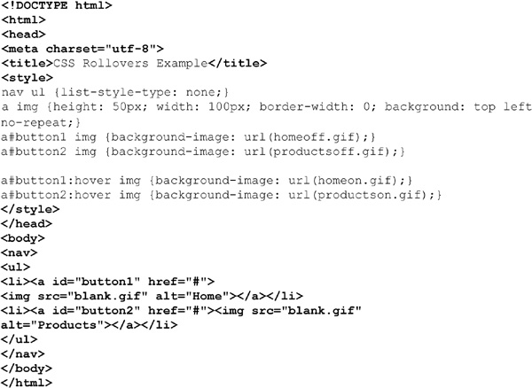
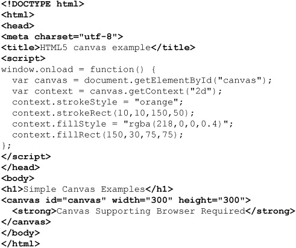
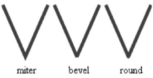
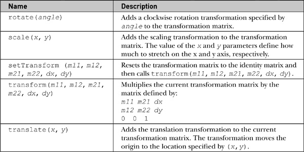
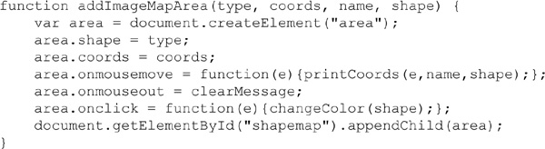
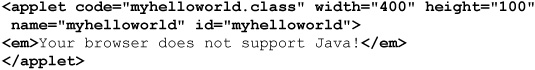

Web pages are not composed solely of text, but generally include a variety of dependent media items such as images (static and generated), videos, audio clips, and multimedia elements such as Flash files. In this chapter, we explore how JavaScript can be used to add and manipulate media elements. Our focus as a reference is primarily on syntax, though we do present a number of illustrative examples, both to present syntax in context and to illuminate common challenges that JavaScript programmers may face.
The images[] collection of the Document object contains Image objects (known as HTMLImageElement in the DOM1 specification) corresponding to all of the <img> tags in the document. Like all collections, images can be referenced numerically (document.images[2]), associatively (document.images[“imagename ”]), and directly (document.images.imagename), though developers may commonly employ standard DOM methods such as getElementById() or getElementsByTagName() to access images just as they would any other element in a DOM tree.
The properties of the Image object correspond, as expected, to the attributes of the <img> tag as defined by HTML5. An overview of the properties of the Image object beyond the common id, className, style, title, and DOM and HTML5 properties are presented in Table 17-1.
Table 17-1 Properties of the Image Object
The traditional Image object supports the standard event handlers but also supports the onabort, onerror, and onload event handlers. The onabort handler is invoked when the user aborts the loading of the image, usually by clicking the browser’s Stop button. The onerror handler is fired when an error occurs during image loading. The onload handler is, of course, fired once the image has loaded. Be cautious with onload, as it may fire in the case of broken images as well as correctly loaded ones.
The following example illustrates simple access to the common properties of Image. A rendering of the example is shown in Figure 17-1.
Figure 17-1 Rendering of Image object tester
Notice in the preceding example how it is possible to manipulate the image src dynamically. We’ll explore this a bit when we discuss the first application of the Image object—the ubiquitous rollover button.
It is probably useful to show some applications of JavaScript manipulation of images to illustrate some common techniques and to contrast older ideas with new technologies such as <canvas>, discussed in an upcoming section. We are by no means complete here in this discussion and aim to present a use case and any concerns it may reveal. Readers are encouraged to search the Web to find production-ready versions of these examples.
Probably the most common use initially of the Image object was for the ubiquitous rollover or mouseover image. Today’s developers are encouraged, in nearly all cases, to use CSS-based rollovers. However, we take a brief moment to discuss JavaScript rollovers, as the challenges and mitigating techniques introduced by this first example of Dynamic HTML (DHTML) are still with us today. To create a basic rollover button, first you will need two, perhaps even three, images to represent each of the button’s states—inactive, active, and unavailable. The first two states are for when the mouse is and is not over the button; the last is an optional state in case you wish to show the button inoperable (for example, grayed out). A simple pair of images for a rollover button is shown here:
The idea is to include the image in the page as normal with an <img> tag referencing the image in its inactive state. When the mouse passes over the image, switch the image’s src to the image representing its active state, and when it leaves revert back to the original image. Naively you might try this:
Of course, you could even shorten the example since you do not need to reference the object path; instead, use the keyword this, as shown here:
This idea will work in new browsers quite easily, but initially this wouldn’t have been possible since the Image object previously had no mouseover event handler and, in fact, we faced a time when the technology wasn’t ubiquitous. Initial attempts to look for image support employed browser detection:
However, this approach suffers because it requires us to be browser feature experts in a world where features change all the time. Furthermore, we often find browsers masquerading as other browsers. A better way to handle this problem would be to employ some form of feature detection, for example, looking for the presence of the document.images[] collection:
If, later, we then had to deal with browser-specific issues, we would splice that in:
However, besides the complexity of capability support and browser-specific fix-ups, we may also encounter some network issues. For example, what will happen if the user starts triggering rollovers when the rollover images haven’t been downloaded? Unfortunately, the answer is that a broken image will be shown. To combat this, we use JavaScript preloading to force the browser to download an image (or another object) before it is actually needed and put it in cache for later use. Here is one time where the blocking nature of JavaScript actually serves us well. A simple illustrative code fragment might look like this:
Of course, more appropriately, we should employ a function to avoid repetitive code.
At this point, we are ready to think about generalizing the code to avoid inline event handlers and the like and to try to aim to make it easily configurable via markup. In the example here, we employ HTML5 data-* attributes and look over the document to find those that need rollovers bound to them:
ONLINE http://javascriptref.com/3ed/ch17/oldfashionrollovers.html
Of course, this isn’t really the best approach today considering that we could perform this much easier just using CSS and the : hover pseudo class selector, as shown here:

ONLINE http://javascriptref.com/3ed/ch17/cssrollovers.html
With CSS, most go even further and address the multiple image download problem that plagues rollovers. For example, we might create one large image of navigation buttons in various states. Such an image is generally dubbed a CSS sprite or sprite sheet. A simple example is shown here.
To utilize the sprite sheet, we would then change our hovers to reveal the position of the image we are interested in.
So, given that we can use CSS for rollovers, why would one ever want to use JavaScript? Simply put, JavaScript is just more flexible, and the hover can trigger anything. For example, let’s say we wanted to change the image and have some explanatory text appear elsewhere on the screen. You might aim to use the CSS content property to do this, but fundamentally what you will find out is that the more interactivity you add, the more you still need JavaScript. Trying to force CSS into coding duties is going to be a lesson in frustration.
To encourage readers not to give up on JavaScript here, consider this example, which updates a region and modifies the rollover half using CSS and the other half using JavaScript, as shown in Figure 17-2.
Figure 17-2 CSS and JavaScript rollovers living together
ONLINE http://javascriptref.com/3ed/ch17.html5rollovers.html
Another common use of JavaScript and images is to create some sort of slide show or light box effect. Very often we might want to display a thumbnail and then click on it and have it show in a larger form. As an example, here we have a few images of pets, and we attach class names to indicate we would like light box functionality:
When the page loads, we might find each image and associate a click event to bring up the light box:
The light box would be created by creating a <div> tag to overlay the whole screen; for example, if we had a CSS class called blackout, we could then dynamically create a <div> when the light-boxed image is clicked to cover the screen:
We would then add a click handler to it for dismissing the overlay once it is clicked:
Finally, we need to put the image on the overlay, probably the most difficult thing being to make sure that we center it properly:
Once the image is added to the overlay, we then add it to the document and get the full effect shown in Figure 17-3.
Figure 17-3 Simple lightbox in action
ONLINE http://www.javascriptref.com/3ed/ch17/lightbox.html
Clearly, there are many things we might consider adding to the light box example, including captions, more styling, and likely some dramatic sizing and show-hide mechanism to add a little drama. As we add more and more glitz to the demo, we start to see it become what is thought of as DHTML, so it is probably better that we discuss this idea more generally.
We’ve seen how JavaScript can be used to update images in the page dynamically in response to user actions. But if you consider that almost all parts of the page are scriptable in modern browsers, you’ll realize that manipulating images is only the tip of the iceberg. Given browser support, you can update not just images but also text and other content enclosed in tags, particularly <div> tags, embedded objects, forms, and even the text in the page. You’re not just limited to changing content, either. Because most objects expose their CSS properties, you can change appearance and layout as well.
Three technologies come together to provide these features: HTML markup provides the structural foundation of content, CSS contributes to its appearance and placement, and JavaScript enables the dynamic manipulation of both of these features. This combination of technologies is often referred to as Dynamic HTML, or DHTML for short, particularly when the created effect appears to cause the page to significantly change its structure. In this section, we briefly explore some applications of DHTML.
As our first example of DHTML, we use JavaScript to move items around the screen. With recent browsers, this has become much easier because the same methods and properties can be used to create a cross-browser solution. As an example, imagine if we have a <div> tag with some styling or even an image in it:
Setting new properties is as simple as retrieving the element and modifying the property. In most cases, the property will be a property of the style object:
In this example, the left and top properties were modified to move the object within the page.
These can be generalized into functions for reuse:
In addition to setX() and setY(), it would be logical to have setZ(), setWidth(), and setHeight(), which follow the same principles.
One interesting thing to note is that getX() or getY() is not shown immediately. The reason is that if the top or left values are not set in line with CSS or by JavaScript, they will not return a value. Instead, we add in a getStyle() function, which uses getComputedStyle() to retrieve the actual value if the property is not set via JavaScript:
Now that these functions have been established, it is simple to move elements around a page. We can easily add show/hide functions or even content changes with innerHTML quite easily. An example online and shown in Figure 17-4 demonstrates all of these.
Figure 17-4 Testing simple DHTML with layerlib.js
ONLINE http://www.javascriptref.com/3ed/ch17/layers.html
ONLINE http://www.javascriptref.com/3ed/ch17/layerlib.js
Next, we expand our JavaScript-driven excitement by adding some simple functions to create DHTML animation. Traditionally, setTimeout() and setInterval() have been used to implement such animations. As we will see later in the chapter, requestAnimationFrame() is an attempt to optimize the browser performance of animations. In our example, a UFO is added to the page in the form of an <img> tag embedded in a <div> tag. The user is able to choose to move the UFO up, down, right, or left, which is changed by the previously mentioned getX() / setX() and getY() / setY() functions. We add in timers to repeat movements until various boundary values are hit to give the illusion of some constant movement.
As a simple example, looking at the up() function in the following listing, we see that the UFO is retrieved and then getY() is called to find out the current location of the UFO. The getY() function is simply a wrapper for the getStyle() function discussed in the previous section. The current position is checked to see if it is at the top. If it is not, the y coordinate is changed and then setTimeout() is called so that the same procedure will be executed again to give the illusion of constant movement. Once the UFO reaches the top, the animation stops repeating:
ONLINE http://javascriptref.com/3ed/ch17/ufo.html
To demonstrate the use of setInterval() for DHTML animation, we present a simple JavaScript that reveals a page. In this case, two <div> tags are created and placed on top of the HTML content, and then setInterval() is set to change the clipping dimensions of the <div> tags continuously until the page is open. We omit the code in print and direct readers online if they want to see the technique in detail:
ONLINE http://www.javascriptref.com/3ed/ch17/wipeout.html
What is interesting about much of what is classic DHTML is that it simply isn’t as useful anymore. In fact, CSS animations and transforms could allow you to make a similar “wipeout” demo without any code at all. We show the code here so you see the declarative nature of CSS specifying an animation:
ONLINE http://www.javascriptref.com/3ed/ch17/wipeout-css.html
Like the rollover example using just CSS, we note that fine-grain control isn’t really possible with pure CSS solutions (at least at this point). We expect this to change in the future, but readers shouldn’t preclude the use of JavaScript when performing DHTML-style animation because it might really be needed!
Finally, we hope readers noticed quite quickly the significant number of vendor prefixing required to make the example work in shipping browsers at the time this edition was written. We added properties without them in hope that in the future this will straighten out. There are other solutions that even use JavaScript to insert all these prefixes dynamically, but that kind of defeats the whole point. What we aim to point out is that, while the technology has changed for the dynamic effect, the nightmare of cross-browser issues continues unabated. Standards certainly help, but if we are honest we must acknowledge that they take a while to be adopted.
The canvas element is used to render simple bitmap graphics such as line art, graphs, and other custom graphical elements on the client side. Initially introduced in the summer of 2004 by Apple in its Safari browser, the canvas element is now supported in many browsers, including Firefox 1.5+, Opera 9+, Internet Explorer 9+, and Safari 2+, and as such is included in the HTML5 specification. While prior to version 9 Internet Explorer did not directly support the tag, there are JavaScript libraries that emulate <canvas> syntax using Microsoft’s Vector Markup Language (VML). (Circa late 2012, the most popular IE <canvas> emulation library is explorercanvas, available at http://code.google.com/p/explorercanvas/.) We’ll look at Scalable Vector Graphics (SVG), the successor to VML, as an alternative to canvas later in the chapter. For now, let’s explore what the Canvas API has to offer.
From a markup point of view, there is little that you can do with a <canvas> tag. You simply put the element in the page, name it with an id attribute, and define its dimensions with height and width attributes:
NOTE The alternative content placed within the element is displayed for browsers that don’t support the canvas element.
After a <canvas> tag is placed in a document, the next step is to use JavaScript to access and draw on the element. For example, the following fetches the object by its id value and creates a two-dimensional drawing context:
NOTE 3D drawing is coming to <canvas> but is not currently defined outside of extensions.
In order to programmatically check for canvas support, it is as simple as seeing if the getContext() method exists on the canvas element:
The basic properties of methods for manipulating a canvas object are shown in Table 17-2.
Table 17-2 Basic canvas Properties and Methods
Once you have the drawing context, various methods can be used to draw on it. For example, the strokeRect (x,y,width,height) method takes x and y coordinates and height and width, all specified as numbers representing pixels. For example, the following would draw a simple rectangle of 150 pixels by 50 pixels starting at the coordinate 10,10 from the origin of the placed <canvas> tag:

In order to set a particular color for the stroke, the strokeStyle() property can be set, like so:
In order to make a solid rectangle, the fillRect(x,y,width,height) method can be employed:
The rectangle methods are shown here in Table 17-3.
Table 17-3 Rectangle Methods for canvas
By default, the fill color will be black, but a different fill color can be defined by setting the fillStyle() property; this example sets a light-red color:
Standard CSS color functions, which may include opacity, may be used; for example, here the opacity of the reddish fill is set to 40 percent:
A full example using the first canvas element and associated JavaScript is presented here:

ONLINE http://javascriptref.com/3ed/ch17/canvas.html
In a supporting browser, the simple example draws some rectangles:
Unfortunately, Internet Explorer up to version 8 will not be able to render the example without a compatibility library:
Reworking the example to add just such a library makes things work just fine:
ONLINE http://javascriptref.com/3ed/ch17/canvasie.html
HTML5 defines a complete API for drawing on a canvas element, which is composed of many individual sub-APIs for common tasks. For example, to do some more complex shapes, the path API must be used. The path API stores a collection of subpaths formed by various shape functions and connects the subpaths via a fill() or stroke() call. To begin a path, beginPath() is called to reset the path collection. Then, any variety of shape calls can occur to add a subpath to the collection. Once all subpaths are properly added, closePath() can optionally be called to close the loop. Then fill() or stroke() will display the path as a newly created shape. This simple example draws a V shape using lineTo():
Now, if closePath() were added before stroke(), the V shape would turn into a triangle because closePath() would connect the last point and the first point.
Also, by calling fill() instead of stroke(), the triangle will be filled in with whatever the fill color is, or black if none is specified. Of course, both fill() and stroke() can be called on any drawn shape if you want to have a stroke around a filled region. Thus, to style the drawing, both the fillStyle and strokeStyle can be specified, as shown in this example:
As seen in the previous example, the lineWidth property can be set to specify the width of the line. In addition to lineWidth, there are a few other properties that customize the style of the line. The lineCap property defines the ending that is put on the line. The possible choices are butt, square, and round. The differences are shown here:

The next property relevant to drawing lines is lineJoin. This property indicates how the corners should be styled when two lines meet. The choices are miter, bevel, and round. If lineJoin is set to miter, the miterLimit property can be set to indicate the maximum length the line will be extended. The following image illustrates the differences in the lineJoin options:

Table 17-4 contains the list of line properties.
Table 17-4 Line Properties for canvas
Drawing on a <canvas> isn’t limited to simple lines; it is also possible to create curved lines using arc(), arcTo(), quadraticCurveTo(), and bezierCurveTo(). To illustrate these methods, this section shows how to draw a simple face.
The arc(x,y, radius, startAngle, endAngle, counterclockwise) method can be used to draw circles and parts of circles. Its location is defined by the point of its center (x,y) as well as the circle’s radius. How much of the circle is drawn is defined by startAngle and endAngle, in radians. The direction of the curve is set by a Boolean value, which is the final parameter specified by counterclockwise. If it is set to true, the curve will move counterclockwise; otherwise, it will move clockwise. In case your math is a bit rusty, to make a full circle, the start angle should be set to 0 and the end angle should be 2π. So, to start the face drawing, arc() is used to draw the head as a circle:
Use the quadraticCurveTo(cpx,cpy,x,y) method to draw the nose and the mouth. This function starts at the last point in the path and draws a line to (x,y). The control point (cpx,cpy) is used to pull the line in that direction, resulting in a curved line. However, moveTo() can be called first to set the last point in the path. In the following snippet, a line was drawn from (155,130) to (155,155). Because the x-coordinate of the control point (130,145) is to the left, the line is pulled in that direction. Because the y-coordinate is in between the y-coordinates, the pull is roughly in the middle:
The bezierCurveTo(cp1x,cp1y,cp2x,cp2y,x,y) method can be used to draw the eyes. This function is similar to quadraticCurveTo(), except that it has two control points and has a line that is pulled toward both of them. Again, moveTo() is used to set the start point of the line:
Lastly, use arcTo (x1,y1,x2,y2,radius) to draw a frame around the face. Unfortunately, foreshadowing some issues with the Canvas API, we note that arcTo() is not currently supported properly in all browsers, so it may render oddly. When it does work, it creates two lines and then draws an arc with the radius specified and containing a point tangent to each of the lines. The first line is drawn from the last point in the subpath to (x1,y1), and the second line is drawn from (x1,y1) to (x2,y2):
The complete example is shown next. Note that, given layering, the frame and face are drawn and filled in first, and the features are drawn last. Also note that the paths are reset with the beginPath() method. Commonly, people forget to do this, which can produce some interesting drawings. A rendering of the face example is shown in Figure 17-5.
Figure 17-5 Drawing a canvas smiley
ONLINE http://javascriptref.com/3ed/ch17/canvasface.html
The methods of the Path API are described in Table 17-5.
Table 17-5 Path API Methods for canvas
As seen in a few previous examples, the fill color can be changed by setting the fillStyle property. In addition to the CSS color values, the fillStyle can also be set to a gradient object. A gradient object can be created by using createLinearGradient() or createRadialGradient().
The following example creates a simple linear gradient that will be applied to a rectangle using the createLinearGradient(x1,y1,x2,y2) method. The gradient is positioned at 10,150 and is set to go 200 pixels in both directions.
Next, the gradient colors are added using the addColorStop() method. This specifies a color and the offset position in the gradient where the color should occur. The offset must be between 0 and 1:
Of course, the rgba CSS function could be used to create a gradient with transparency as well. After the addColorStop() methods have been added, the fillStyle is set to the newly created Gradient object. Here is the complete code snippet, followed by a visual example:
Note that before the shape is drawn, the path is reset to ensure that these changes are not applied to previously rendered parts of the drawing.
To create a radial gradient using createRadialGradient(x1,y1,r1,x2,y2,r2), the position and radius of two circles must be set to serve as the gradient. Once again, color stops are added in the same manner as the linear gradient, so the code looks quite similar:
The complete example, drawing a few different shapes with fills and styles, is presented here:
ONLINE http://javascriptref.com/3ed/ch17/canvaslinesandshapes.html
Table 17-6 shows the complete list of style and color properties.
Table 17-6 Color and Style Properties and Methods for canvas

As the context is specified as 2d, it is no surprise that everything seen so far has been two-dimensional. It is possible to add some perspective by choosing proper points and shades. The 3-D cube shown in Figure 17-6 is created using nothing more than several moveTo() and lineTo() calls. The lineTo() call is used to create three sides of the cube, but the points set are not straight horizontal and vertical lines, as we see when making two-dimensional squares. Shading is applied to give the illusion of dimensionality because of the application of a light source. While the code here is pretty simple, you can see that using a canvas properly is often a function more of what you may know about basic geometry and drawing than anything else:
Figure 17-6 Faking 3-D with perspective
ONLINE http://javascriptref.com/3ed/ch17/canvascube.html
We now have looked at the basic shapes and styling, but there is much more that can be done to customize a drawing through transformations. The Canvas API provides a number of useful methods that accomplish the common tasks you will likely want to perform. First let’s explore the scale(x,y) function, which can be used to scale objects. The x parameter shows how much to scale in the horizontal direction, and the y parameter indicates how much to scale vertically:
ONLINE http://javascriptref.com/3ed/ch17/canvasscale.html
Next up is the rotate(angle) method, which can be used to rotate a drawing in a clockwise direction by an angle defined in radians:
ONLINE http://javascriptref.com/3ed/ch17/canvasrotate.html
The translate(x,y) function is a handy function to use to change the origin from (0,0) to another location in the drawing. The following example moves the origin to (100,100). Then, when the start coordinates of the rectangle are specified at (0,0), it really starts at (100,100):
A simple example of moving some boxes around is shown here:

ONLINE http://javascriptref.com/3ed/ch17/canvastranslate.html
All the methods presented so far are conveniences to help us use an underlying transform matrix associated with paths. All paths have an identity matrix as their default transform. As an identity, this transform matrix does nothing, but it is certainly possible to adjust this matrix in a few ways. First, it can be directly modified by calling setTransform (m11,m12,m21,m22,dx,dy), which resets the matrix to the identity matrix and then calls transform() with the given parameters. Or this can be done directly by using transform(m11,m12,m21,m22,dx,dy), which multiplies whatever the current matrix is with the matrix defined here:
The problem with the method should be obvious: unless you understand more than a bit about matrix math, this can be a little daunting to use. On the bright side, you can do just about anything you want with the method. Here, a simple example skews and moves some simple rectangles. The result is shown in Figure 17-7.
Figure 17-7 Transforming a rectangle
ONLINE http://javascriptref.com/3ed/ch17/canvastransform.html
The transformation methods are listed in Table 17-7.
Table 17-7 Primary canvas Transformation Methods

A very interesting feature of the Canvas API is the ability to insert images into the drawing. There are several ways to do this, but let’s start with the most basic, drawImage(img,x,y), which takes an image object and the coordinates for where the image should be placed. The image will be its natural size when called in this manner. The drawImage(img,x,y,w,h) method can be used if you need to modify the image size and set the width and height.
The actual image passed in to the drawImage() method can come from a few places:
• An image already loaded on the page
• Can be dynamically created through the DOM
• Another canvas object
• An image created by setting its src to a data: URL
The important thing to remember is that the image must be loaded by the time canvas is ready to access it. This may require the use of the onload function for the image:
The last way that drawImage(img,sx,sy,sw,sh,dx,dy,dw,dh) may be called allows a part of the image to be cut out and drawn to the canvas. The (sx,sy) coordinates are the location on the image, and sw and sh are the width and height, respectively. The rest of the parameters prefixed with d are the same as in the previous form of the method:
However you decide to place it, once an image is on the canvas it is then possible to draw on it. The following example loads an image and draws a region in preparation for eventually adding a caption:
ONLINE http://javascriptref.com/3ed/ch17/canvasimage.html
The Image API methods and properties are shown in Table 17-8.
Table 17-8 ImageData API Methods and Properties for canvas
In browsers that supported early forms of the canvas element, text was not well supported in a drawing, if at all. Per HTML5, text functions should now be supported by the Canvas API, and the modern browsers do support it. Text can be written by using fillText(text,x,y [,maxWidth]) or strokeText(text,x,y [,maxWidth]). Both functions take an optional last parameter, maxWidth, that will cut the text off if the width is longer than specified. The fillText() and strokeText() methods can both be utilized to display an outline around the text. Here, a fill color of blue is set and then the phrase “Canvas is great!” is written with a black stroke around the letters:
To get more customized text, the font property can be used. The font property is set identically to a CSS font property. The textAlign and textBaseline can be used to set the horizontal and vertical alignment of the text string. The textAlign property has the possible values of start, end, left, right, and center. The textBaseline property can be set to top, hanging, middle, alphabetic, ideographic, and bottom:
Shadows can be added to shapes simply by setting the shadow properties, shadowOffsetX, shadowOffsetY, shadowBlur, and shadowColor. The offsets simply set how far the shadow should be offset from the image. A positive number would make the shadow go to the right and down. A negative number would make it go to the left and up. The shadowBlur property indicates how blurred the shadow will be, and the shadowColor property indicates the color. This code fragment demonstrates setting a shadow:
The shadow properties are shown in Table 17-9.
Table 17-9 Shadow Properties for canvas
All the concepts from this and the last section can be put together as follows to caption an image with some shadowed text, as shown in Figure 17-8:
Figure 17-8 Even dogs love <canvas>.
ONLINE http://javascriptref.com/3ed/ch17/canvastext.html
The canvas text methods and properties are shown in Table 17-10.
Table 17-10 Text API Methods and Properties for canvas
Now that we have seen how to draw many different types of images, it is necessary to discuss how the shapes will lay out on the canvas when multiple drawings are added. The property globalCompositeOperation is used to specify the manner in which shapes are layered. Table 17-11 shows the many options of globalCompositeOperation. In all cases, A is the new shape being drawn and B is the current canvas. The default is source-over, which indicates that the newly added shape will be placed on top of the current canvas.
Table 17-11 Compositing Options for canvas
In all cases, the squares are being drawn with the same code. The red square is being written first and, therefore, is represented by B when the green square (A) is written:
The only difference is the setting of the globalCompositeOperation:
This capture shows some of the compositing options:
In addition to the globalCompositeOperation, it is possible to set a globalAlpha property. This will be the default transparency value for all drawings. As with other alpha values, the value must be between 0 and 1, with 0 being completely transparent and 1 being completely opaque.
These properties are shown in Table 17-12.
Table 17-12 Compositing Properties for canvas
Canvas offers two handy methods for saving and restoring state. In order to save the current state of the canvas, simply call save(). Then modify the canvas in any way. Later, it is possible to retrieve the previously saved state by calling restore():
In this example, the lineWidth is set to 5 and the strokeStyle is set to red. This state is saved. Then the code goes on to change the width and color. Later, the first state is restored with a call to restore(). Note that the location is not saved in state, so it is still necessary to call moveTo. These methods are described in Table 17-13.
Table 17-13 State Preservation Methods for canvas
In the following sections, we briefly explore some of the areas of the Canvas API that can require a bit of careful thought. As with anything, there are trade-offs with drawing this way, and while they can be mitigated, there may be a few things we give up in doing so.
Since canvas is just a single element, capturing events on individual pieces of the canvas can prove to be challenging. There are many solutions for this problem, and we will look at a couple of them in detail here. Image maps may be the first logical thought. as developers have been using image maps to handle events on pieces of images for many years now. However, it is not currently possible to associate a canvas element with a map element, as is possible with images. This proves not to be a problem, though, as a transparent image can be placed at the same location as the canvas element, and the image map can be associated with the transparent image:
Now that the image map is established, areas must be created to capture events. In this simple example, a rectangle, a triangle, and a circle will be drawn. Each one will capture the onmousemove event and then display the coordinates relative to the shape.
The draw() function initiates the process by adding details about each shape and calling drawShape() for each one. The drawShape() function will call methods to draw the shape and add a corresponding entry in the image map. The drawShape() function also adds the shape to an array for later retrieval:
As shown in the code, each shape object contains relevant coordinates. These coordinates, along with the type, define the shape. These coordinates will be used in drawImageMap() to create a coordinate string that can be added to the image map at the same location as the shape in the canvas. The drawImageMap() function also calculates the minimum x and y values for the shape so that the pixel coordinates can be calculated appropriately in the onmouseover event:
Finally, the addImageMapArea() function creates the area element, adds it to the document, and hooks up the events:

The printCoords() method gets executed upon each mouseover event being fired for each individual area element. Since the shape gets sent to the event handler, it is automatically known what shape is being accessed. The only calculation that needs to happen in the event handler is translating the coordinates to be relative to the shape. As the minimum x and y coordinates have been saved to the shape object, some trivial calculations will deliver the desired points:
ONLINE http://javascriptref.com/3ed/ch17/canvasclick.html
While the image area method certainly works and is effective, it can also be a memory hog and slow down performance. Keep in mind that every object that needs to handle mouse events will need an area tag associated with it. This can lead to some massive DOM explosion in a large canvas. Similar methods include creating invisible div tags for each shape or even creating a separate canvas element for each shape, but both of these would still cause a large amount of memory overhead.
The other classification would be pixel management. In this case, during an event, the pixels are inspected to look up a shape that might be at that location. It is possible to create a pixel map where each shape stores the pixel range it encompasses. This might be simple for a rectangle or a circle, but it would require more advanced math for various polygon shapes. Another option is to create a canvas map. In this case, a second hidden canvas is added to the page at the same location as the original:
The drawShape() function is modified so that it calls drawContext() twice. The first time is with the original settings on the main canvas. The second time, the same shape is added to the hidden canvas with a specified, solid color that is randomly generated. Note that it is necessary for the color to be unique, so a random color is generated until one is found that is not already in the colorMap:
The events are added directly to the main canvas. When the event is captured, the current pixel coordinates are calculated, as shown in the previous example. Once the coordinates are calculated, getImageData() is executed on the mapped canvas. Now, it is possible to look at the color of the pixel and check if it is in the colorMap table. If it is, then the relevant shape is retrieved. Otherwise, the mouse event did not occur on a saved shape. Note that getImageData().data returns the color in RGB, while we stored the color in hex. A conversion is necessary before performing the lookup:
The results are the same as the first example. However, in this case, only one extra DOM element was added to the page. In this small example, the extra DOM elements are not a big deal, but in large scale applications they can have a big effect.
ONLINE http://javascriptref.com/3ed/ch17/canvaspixelcheck.html
NOTE As the edition goes to publication, we see the emergence of a hit testing addition to the Canvas API. This welcome change had, as of publication, not been implemented, but it suggests the techniques in this section may be more for backward compatibility rather than primary use sometime in the near future.
In the previous section, we looked at different methods for capturing events. However, once the events were captured, data about the event was presented to the screen and the original <canvas> stayed intact. It is often desirable to modify the actual <canvas>. There are two primary ways to go about doing this. The first method requires clearing out the entire <canvas> and redrawing it with the new settings.
Our running example uses the image map method to capture the click event. When a shape is clicked, the fillStyle will be changed to a random color and then the image will be redrawn:
The redraw() method clears the current canvas, loops through the shapes array, and then redraws each of the shapes. As it is not re-creating the shape objects, the fillStyle that was set in the event handler will be set as the color for the shape:
Note that only drawContext() was called for each shape. This is because the shapes are staying in the same location. If the shape were moving, the image map would have to be regenerated as well. In this case, the image map that was created on initial draw will remain relevant:
ONLINE http://javascriptref.com/3ed/ch17/canvasclick.html
Clearing an entire <canvas> works as expected in this example. In some cases, it is even the correct solution, but consider a <canvas> that has hundreds of shapes and only one is being modified. It would be a waste of resources to redraw the entire thing. Unfortunately, the only way to clear items from a canvas is with the clearRect() method. In order to clear individual pieces, clearRect() would need to be called on a rectangle that contains the piece to be redrawn. It is very important to note that if the containing rectangle contains any other pieces of the <canvas>, they must be redrawn as well.
In this case, the redraw() function is slightly more complicated, as it calculates the containing rectangle:
When allowing a user to modify a canvas, it is often desirable to save that modification. This can be accomplished by using canvas.toDataURL() to translate the canvas into an image. In this example, the canvas is copied to a dataURL and placed as the src of an <image> tag within the page. However, it is possible to take the returned dataURL and send it to a server-side program to save or store, depending on the application’s needs:
ONLINE http://javascriptref.com/3ed/ch17/toDataUrl.html
At the simplest form, animation is just a matter of redrawing an object in a different position. As we have seen in previous examples, there are a couple of ways to redraw a canvas object. In this example, we will see a simplified version of pong with one paddle to catch the ball at the bottom. The paddle can be moved with the right and left arrow keys. If the ball reaches the bottom of the box, the game ends. Since the paddle and ball both need to be redrawn, the clear method of choice is a complete clearing of the <canvas>.
First, it is necessary to capture the keyup and keydown events. These events will set Booleans indicating whether or not the left or right arrow keys are being pressed:
Then an interval will be set up to run every 10 ms:
The bulk of the action occurs in the draw() method. First, the previous canvas is cleared. Then the ball is drawn as well as the paddle. Finally, the ball is checked to see if it is below the paddle, on the paddle, or elsewhere, and the ball position is adjusted accordingly for the next call to draw(). If the ball is below the paddle, the interval is cleared and the animation completes:
ONLINE http://javascriptref.com/3ed/ch17/animate.html
An alternative to the setInterval() function for animations is requestAnimation Frame(callback). This function tells the browser that the code is ready for a repaint and that the browser should call the callback function when it is ready to perform the redraw. The requestAnimationFrame() technique is preferable to the setInterval() method because the browser can optimize when it is called for better performance and memory management. At the time of this book’s release, requestAnimationFrame is in the early stages of development and still handled with browser-specific prefixes, so it is necessary to check the various methods before making the call:
The requestAnimationFrame() method is not an interval, so it is necessary to call it every time you want it to run. To get the fastest performance, it should be called at the beginning of the callback function. In this case, a global variable g_stop is set when the ball falls below the paddle. If we reach that point, requestAnimationFrame() won’t be called again. Otherwise, it is called before other code is executed:

ONLINE http://javascriptref.com/3ed/ch17/requestAnimationFrame.html
Even at this late day, small implementation details vary between browsers and, for now, Internet Explorer versions prior to 9 require a compatibility library even for basic support. Scripting canvas-based drawings for interactivity is a bit clunky, and text support is far from stellar. Accessibility concerns also exist. However, don’t let the challenges dissuade you. Nothing is perfect; we’ll see when discussing SVG next that weaknesses of canvas are strengths for it, but its weaknesses can be canvas strengths. The trade-offs of technology exist no matter what marketers may tell you.
Like Canvas, SVG provides developers a method for providing graphics within an HTML page. However, whereas the Canvas API is primarily script based, SVG is an XML-based language. SVG is rendered using retained-mode graphics. This can be advantageous because the graphic is not redrawn on animation, but simply moved. In addition, considering that SVG is tag based, it is possible to hook events directly to individual elements of the drawing. It is easy to access previously drawn elements and modify them as desired. As we saw in the previous section, this is not as simple using the Canvas API. On the other hand, considering that SVG is tag based, the DOM tree has the potential to grow quite large if there are many elements on the page. Also, as canvas deals directly with pixels, it can be faster for drawing lots of items, especially if there is no interactivity involved. There is a place for both SVG and <canvas>, so let’s take a look now at SVG in detail.
There are several ways of including an SVG document within an HTML page. The first thought would be to place the <svg> tags directly within the page. In the near future, this should be an appropriate thought, but for now this method is not supported throughout all modern browsers. The most supported method of embedding SVG is to use the <embed> tag:
The SVG page should be served with a content-type of image/svg+xml.
Another way to include SVG would be entirely with JavaScript. In this case, all SVG tags will be generated using JavaScript as well. Note that createElementNS() must be used, as the SVG elements are from a different namespace than the HTML document:
SVG uses tags to draw shapes. The shape tags include <rect>, <polygon>, <ellipse>, <circle>, <text>, and <line>. Attributes are used to configure the tags. Many settings can be applied to the shape via an attribute or a CSS style:
Script can be added directly to an SVG document within a CDATA section:
In order to create an SVG element through JavaScript, the DOM functions, createElementNS(), setAttribute(), and appendChild() are used:
You might recall the namespace DOM facilities from Chapter 10. Here we see a practical use for them.
As mentioned before, hooking up events to SVG is quite trivial and requires the same skills as hooking up HTML DOM events. In addition, when performing the action, it is simple to modify the attributes of an SVG element and not have to worry about redrawing the entire page.
The printCoords() function is much simpler than the <canvas> version because the event contains the coordinates within the SVG document, along with the coordinates of the target element. The difference between these values results in the coordinates within the current element, and no other manipulations or calculations are required:
Similarly, the changeColor() function is quite trivial. The fill attribute needs to be updated to the new color. The shape to be modified is the target of the event, so no additional calculations are necessary:
In addition to easier interactivity, SVG also offers tags that provide animation. These tags are embedded within the object that they are animating:
This will move the rectangle to the right 50 pixels. It will take place over three seconds and will stop after one iteration. It is possible to set repeatCount to “indefinite” to run the animation continuously. The <animateMotion> and <animateTransform> tags are also used to animate other aspects of an SVG drawing.
SVG can also use the setTimeout() or requestAnimationFrame() schemes that we previously discussed in the canvas section. Once again, the animation redraw will only require the modification of the changed attribute and not redrawing the entire picture.
ONLINE http://javascriptref.com/3ed/ch17/svg.html
Two significant new features of HTML5 are the <audio> and <video> tags. These tags build audio and video media into the browser instead of necessitating the use of flash or another plug-in. The audio and video elements share many of the same properties and methods. The difference being, of course, that video is visual while audio is solely auditory.
To add video to a Web page, a <video> tag can be placed among the HTML. Generally <source> tags are added as children of the video element to indicate where the video is coming from. The <source> tag should specify the src as well as the type. The video element can have an unlimited number of <source> children. The browser will look at them in order and load the first one that is supported. After the <source> tags, a fallback can be specified that will only be loaded if the browser does not support the video element. In this example, the fallback is an error message, but it is also possible to put HTML to load a plug-in such as Flash here:
The source element’s properties are described in Table 17-14.
Table 17-14 Properties of the HTMLSourceElement Object
If only one source is needed, such as in the case that all browsers support a single type in the future, the <source> elements are not necessary and the src attribute can be placed directly on the <video> tag:
The video element has an extensive API for controlling media through JavaScript. The controls property can be set so that built-in controls will show up allowing the user to play and pause the video at their discretion. It is also possible to hide the controls and create your own. In this case, the play() and pause() methods can be used to implement those behaviors. By default, the playback will stop at the end of the data, but it is possible to set the loop property to true in order to play the video continuously.
Before a video has any data to display, an image can be shown in the area that the video will be displayed in. This image can be set via the poster property:
An interesting property is the playbackRate. This is set to a number where 1 is normal speed. With this property, it is possible to speed up or slow down the media feed. It is possible to jump around the video timeline by setting the currentTime property to a number indicating the current position of the video playback represented in seconds. When this property is updated, the video will move to the location specified:

The volume can be changed by directly modifying the volume property. This should be set to a value between 0 and 1, where 0 is muted and 1 is the loudest. It is also possible to set the muted property to true to mute the video directly:
There exist a number of properties that give you information about the video loading and playback status. The src and currentSrc point to the URL that is feeding the data to the video. The videoWidth and videoHeight indicate the dimensions of the actual video, whereas width and height indicate the dimensions of the video element on the page. The networkState property is set to one of four values that indicate the state of the network fetch of the video. This property can be set to any of the following values:
• HTMLMediaElement.NETWORK_EMPTY Indicates that the currentSrc is not set
• HTMLMediaElement.NETWORK_IDLE Indicates that resource fetching is possible but awaiting feedback from the user before fetching any more data
• HTMLMediaElement.NETWORK_LOADING Indicates that data is currently being fetched
• HTMLMediaElement.NETWORK_NO_SOURCE Indicates that the currentSrc cannot be loaded
Next, the readyState property can be set to one of five values indicating the readyState of the media load:
• HTMLMediaElement.HAVE_NOTHING Indicates that no information about the video has been loaded
• HTMLMediaElement.HAVE_METADATA Indicates that the metadata has been loaded, including duration, videoWidth, and videoHeight
• HTMLMediaElement.HAVE_CURRENT_DATA Indicates that there is data for the current position but not future frames
• HTMLMediaElement.HAVE_FUTURE_DATA Indicates that there is data for the current position and the next frame but not enough to keep playing without rebuffering
• HTMLMediaElement.HAVE_ENOUGH_DATA Indicates that there is enough data to play continuously through without rebuffering
There are a few TimeRange objects that give range-of-time information. The first is buffered, which indicates the time range that has been buffered. The seekable property holds the range for the time that the user is able to seek to. The seeking property contains a Boolean indicating that the media is currently seeking to a new position. Finally, played holds the range of the video that has been played.
The following code, a rendering of which is shown in Figure 17-9, gets all the relevant information about the video and displays it in a message on the page:
Figure 17-9 HTML5 video demo rendering
ONLINE http://javascriptref.com/3ed/ch17/video.html
There are a few properties that are specific to <video>. These are detailed in Table 17-15.
Table 17-15 Properties of the Video Object
The rest are applicable to both <audio> and <video> and can be seen in Table 17-16.
Table 17-16 Properties of the Media Object
Finally, the methods are all applicable to both <video> and <audio> and are listed in Table 17-17.
Table 17-17 Methods of the Media Object
As mentioned above, most of the properties that we described in regards to <video> also apply to <audio>. An audio element is added to a page in the same manner as a video element using either <source> tags or the src attribute directly on the <audio> tag.
Audio can be controlled by the end user using the built-in controls, or it can be controlled via the API in the same manner as <video>. If trying to choose a media file to set as the src, it is possible to use the canPlayType(type) method. After passing in a MIME type, the function will return the empty string (meaning that it is not supported), “maybe”, or “probably”. Though these aren’t the most confident answers, it gives some indication as to what is supported by the browser.
ONLINE http://javascriptref.com/3ed/ch17/audio.html
In addition to the properties and methods of the media elements, many events can be handled for all phases of the media download and play. These events are detailed in Table 17-18.
Table 17-18 Events of the Media Object
Browser plug-ins are executable components that extend the browser’s capabilities in a particular way. When the browser encounters an embedded object of a type that it is not prepared to handle (for example, something that isn’t HTML or another Web file type), the browser might hand the content off to an appropriate plug-in. If no appropriate plug-in is installed, the user is given the option to install one (assuming the page is properly written). Plug-ins consist of executable code for displaying or otherwise processing a particular type of data. In this way, the browser is able to hand special types of data, for example, multimedia files, to plug-ins for processing.
Plug-ins are persistent in the browser in the sense that once installed, they remain there unless manually removed by the user. Most browsers come with many plug-ins already installed, so you may have used them without even knowing it. Plug-ins were introduced in Netscape 2 but are supported, at least HTML–syntax-wise, by all major browsers, including Firefox, Safari, Chrome, Opera, and Internet Explorer. However, the actual component in the case of Internet Explorer is not a plug-in but instead an ActiveX control discussed later in the chapter.
Although not initially a part of any HTML specification, the <embed> tag is now specified under HTML5 and is the most common way to add plug-in–based content to a Web page. As an example, a Macromedia Flash file might be embedded as follows:
The result of loading a page with this markup is shown here:
The most important attributes of the <embed> tag are src, which gives the URL of the embedded object, and the dimensions height and width to define the space that the plug-in content may consume. The HTML5 specification also defines type, which is the MIME type used to trigger the associated plug-in. This really should be done via the correct header set on the HTTP response or by the file extension, but if you need it the attribute is there.
Access to the common attributes is as like any other DOM element, and the corresponding properties in the case of plug-ins are identical (height, width, src, and type). Accessing the embedded object of interest can be performed directly using methods such as document.getElementById (“demo”), but you can also rely on the fact that, as an older technology, you can use collections such as document.embeds[] or document.plugins[]. We’ll see the use of these in an upcoming section.
There may be quite a number of other attributes on an <embed> tag not defined in any specification. Some of these attributes are general to the plug-in architecture. For example, pluginspage indicates to the browser where the required plug-in is to be found if it is not installed in the browser. Plug-in vendors typically make available the embedding syntax, so check their site for the value of pluginspage. Other attributes may be specific to the type of embedded content; for example, we show the loop attribute, which can control the play behavior of the SWF file. There may be numerous attributes per embedded content type, so it is best to check the documentation of whatever you are embedding carefully for the allowed options.
Traditionally, the HTML specification focused on the <object> tag as the more official way to include embedded objects of any kind in your pages; however, <embed> continues to be supported by new browsers, and it is widely used by developers, so it is unlikely that <object> will completely supplant <embed>, at least any time in the near future. Nevertheless, <object> and <embed> are very often used together in order to maximize client compatibility. This technique is illustrated in the section entitled “ActiveX” later in this chapter.
So how does the browser know what kind of data is appropriate for each plug-in? The answer lies in Multipurpose Internet Mail Extension (MIME) types. MIME types are short strings of the form mediatype/subtype, where the mediatype describes the general nature of the data and the subtype describes it more specifically. For example, GIF images have the type image/gif, which indicates that the data is an image and that its specific format is GIF (Graphics Interchange Format). In contrast, CSS files have the type text/css, which indicates that the file is composed of plain text adhering to CSS specifications. The MIME major media types are application (proprietary data format used by some applications), audio, image, message, model, multipart, text, and video.
Each media type is associated with at most one handler in the browser. Common Web media such as XHTML, CSS, plain text, and images are handled by the browser itself. Other media, such as MPEG video and Macromedia Flash, are associated with the appropriate plug-in (if it is installed). Keep in mind that a plug-in can handle multiple MIME types (for example, different types of video), but that each MIME type is associated with at most one plug-in. If one type were associated with more than one plug-in, the browser would have to find some way to arbitrate which component actually receives the data.
Most browsers provide an easy way to examine the ability of the browser to handle particular MIME types. The mimeTypes[] array found in the Navigator object holds an array of MimeType objects. Some interesting properties of this object are shown in Table 17-19.
Table 17-19 Properties of the MimeType Object
The browser hands embedded objects off to plug-ins according to the data that makes up each of these objects. A good way to think about the process is that the browser looks up MIME types and filename suffixes in the mimeTypes[] array to find the enabledPlugin reference to the appropriate plug-in. The programmer can therefore use the mimeTypes array to check whether the browser will be able to handle a particular kind of data.
Before delving into this process, it might be insightful to see what MIME types your browser supports. The following code prints out the contents of the mimeTypes[] array:
Part of the result is shown in Figure 17-10.
Figure 17-10 MIME types collection example output
In some browsers, notably the Mozilla-based browsers, you may access similar plug-in information by typing about:plugins in the address bar of the browser. See Figure 17-11 for an example.
Figure 17-11 about:plugins Example Output
To detect support for a particular data type, you first access the mimeTypes[] array by the MIME type string in which you are interested. If a MimeType object exists for the desired type, you then make sure that the plug-in is available by checking the MimeType object’s enabledPlugin property. The concept is illustrated by the following code:
If the user’s browser has the mimeTypes[] array, supports MPEG video (video/mpeg), and the plug-in is enabled, an embedded MPEG video file is written to the document. If these conditions are not fulfilled, then a simple image is written to the page. This MIME type detection technique is used when you care only whether a browser supports a particular kind of data. It gives you no guarantee about the particular plug-in that will handle it. To harness some of the more advanced capabilities that a plug-in may provide, you often need to know if a specific vendor’s plug-in is in use. This requires a different approach.
Each plug-in installed in the browser should create an entry in the plugins[] array of the Navigator object when a browser supports this type of technology. Each entry in this array is a Plugin object containing information about the specific vendor and version of the component installed. Some interesting properties of the Plugin object are listed in Table 17-20.
Table 17-20 Interesting Properties of the Plugin Object

Each Plugin object is an array of the MimeType objects that it supports (hence its length property). You can visualize the plugins[] and mimeTypes[] arrays as being cross-connected. Each element in plugins[] is an array containing references to one or more elements in mimeTypes[]. Each element in mimeTypes[] is an object referred to by exactly one element in plugins[], the element referred to by the MimeType’s pluginEnabled reference.
You can refer to the individual MimeType objects in a Plugin object by using double-array notation:
This example references the third MimeType object supported by the first plug-in.
More useful is to index the plug-ins by name. For example, to write all of the MIME types supported by the Flash plug-in (if it exists!), you might write the following:
Of course, as with all things plug-in related, you need to read vendor documentation very carefully in order to determine the exact name of the particular plug-in that you are interested in.
To illustrate the composition of the Plugin object more clearly, the following code prints out the contents of the entire plugins[] array:
The results are shown in Figure 17-12.
Figure 17-12 Output of Plugins list
One thing to be particularly conscious of is that Internet Explorer defines a faux plugins[] array as a property of Navigator. It does so in order to prevent poorly written Netscape-specific scripts from throwing errors while they probe for plug-ins. Under Internet Explorer, you have some reference to plug-in related data through the document.embeds[] collection. However, probing for MIME types and other functions is not supported, since Explorer actually uses ActiveX controls to achieve the function of plug-ins included via an <embed> tag. For more information on using JavaScript with ActiveX, see the section entitled “ActiveX” later in this chapter. For now, simply consider that to rely solely on information from navigator.plugins[] without first doing some browser detection can have some odd or even disastrous consequences.
By now, you might be wondering why one would want to detect whether a specific plug-in will be handling a particular MIME type. The reason is that it is possible to use JavaScript to interact with them. In other words, plug-ins can implement a public interface through which JavaScript can interact with them. This capability is most commonly used by multimedia plug-ins to provide JavaScript with fine-grained control over how video and audio are played. For example, plug-ins often make methods available to start, stop, and rewind content, as well as to control volume, quality, and size settings. The developer can then present the user with form fields that control the behavior of the plug-in through JavaScript.
This capability works in the reverse direction as well. Embedded objects can invoke JavaScript in the browser to control navigation or to manipulate the content of the page. The more advanced aspects of this technology are beyond the scope of this book, but common aspects include functions that plug-ins are programmed to invoke when a particular event occurs. Like a JavaScript event handler, the plug-in will attempt to invoke a function with a specific name at a well-defined time, such as when the user halts playback of a multimedia file, for example. To prevent namespace collisions with other objects in the page, these methods are typically prefixed with the name or id attribute of the <object> or <embed> tag of the object instance.
As with applets, there remains the issue of how the JavaScript developer knows which methods the plug-in provides and invokes. The primary source for this information is documentation from the plug-in vendor, but be warned: these interfaces are highly specific to vendor, version, and platform.
We now have most of the preliminary information required in order to detect and interact safely with plug-ins. There is, however, one final aspect of defensive programming to cover before jumping into the interaction itself.
Suppose you have written some custom JavaScript to harness the capabilities provided by a specific plug-in. When users visit your page without the plug-in, they are prompted to install it because you have included the proper pluginspage attribute in your <embed> tag. Unfortunately, if a user visits your page without the plug-in, agrees to download and install it, and then returns to your page, your JavaScript will not detect that the browser has the required plug-in. The reason is that the plugins[] array needs to be refreshed whenever a new plug-in is installed (a browser restart will work as well).
Refreshing the plugins[] array is as simple as invoking its refresh() method. Doing so causes the browser to check for newly installed plug-ins and to reflect the changes in the plugins[] and mimeTypes[] arrays. This method takes a Boolean argument indicating whether the browser should reload any current documents containing an <embed>. If you supply true, the browser causes any documents (and frames) that might be able to take advantage of the new plug-in to reload. If false is passed to the method, the plugins[] array is updated, but no documents are reloaded. A typical example of the method’s use is found here:
Of course, this should be presented only to users of plug-in–supporting browsers in the first place.
To illustrate interaction with plug-ins, we show a simple example using a Flash file. First, we ensure that the flash plug-in exists. If not, an error alert is displayed. If flash does exist, the control buttons are hooked up to control the flow of the flash movie.
The methods we will use in our simple example are GotoFrame(), IsPlaying(), Play(), Rewind(), StopPlay(), TotalFrames(), and Zoom(). The following example controls a simple Flash file extolling the wonders of JavaScript:

ONLINE http://www.javascriptref.com/3ed/ch17/scriptToFlash.html
The example—stopped in the middle of playback and zoomed in—is shown in Figure 17-13.
Figure 17-13 Controlling an SWF file from JavaScript
There exist far more powerful capabilities than the previous example demonstrates. One particularly useful aspect of Flash is that embedded files can issue commands using the ExternalInterface library that can be “caught” with JavaScript by defining an appropriately named function. An embedded Flash file can call the following:
Flash:
JavaScript:
This will cause the Flash file to cross over into browser territory to invoke the functionName () method if one exists. Similarly, the JavaScript can call a function in the SWF if it was initialized by the Flash file. In ActionScript, the ExternalInterface.addCallback(functionName, function) method is used to set up the accessibility, where the functionName is the name that is called from JavaScript and function is a reference to the function that should be invoked. It is important to note that an error will be thrown if ExternalInterface calls are attempted before the Flash file has completed loading. Either wait until window.onload occurs or use ExternalInterface.call to indicate that the Flash load has completed.
Flash/ActionScript:
JavaScript:
The following examples, also shown in Figure 17-14, illustrate this usage by sending messages back and forth between Flash and JavaScript.
Figure 17-14 Communication from Flash to JavaScript and back
Flash/ActionScript File:
HTML File:

ONLINE http://www.javascriptref.com/3ed/ch17/externalInterface.html
ActiveX is a Microsoft component object technology enabling Windows programs to load and use other programs or objects at runtime. ActiveX controls are basically subprograms launched by the browser that can interact with page content. For example, if a <textarea> provided insufficient editing capabilities for a particular task, the page author might include an ActiveX control that provides an editor interface similar to that of Microsoft Word.
While, on the surface, ActiveX controls might seem a lot like plug-in or Java applet technology, there are important differences, most notably that the security posture of ActiveX controls was initially much looser than other technologies. Second, because ActiveX controls are executable code, they are built for a specific operating system and platform. This means that they are minimally supported outside of Internet Explorer and not at all outside of Windows.
An ActiveX control is embedded in the page using an <object> tag with the classid attribute specifying the GUID (Globally Unique Identifier) of the ActiveX control you wish to instantiate. Parameters are passed using <param> elements, and anything included between the <object>‘s opening and closing tags is processed by non- <object>-aware browsers; for example, the following defines an embedded Flash file for use with an ActiveX control:
In general, ActiveX controls have classid attributes beginning with “clsid:.” We’ll see another possibility later where the classid began with “java:.” In general, the classid attribute specifies the unique identifier of the control for which the data is intended. The classid value for each ActiveX control is published by the vendor, but it is also commonly inserted by Web editor tools automatically. You’ll notice that within the tag we have some other content, which serves as the fallback content in case the object isn’t supported.
By far, the best way to ensure the cross-browser compatibility of your pages is to use a combination of ActiveX control syntax and other browser <object> or <embed> syntax. To accomplish this, use an <object> intended for Internet Explorer/Windows ActiveX controls and then an <embed> tag for other browsers. The technique is illustrated in the following example:
Browsers that do not understand <object> will see the <embed>, whereas browsers capable of processing <object> will ignore the enclosed <embed>. We can make most other browsers recognize <object> for plug-ins, too. Unfortunately, Internet Explorer may try to interpret that as well, so we can use some conditional comments to mask it. This simple example shows how that might be accomplished:
Clearly, it is a good idea to think about all of the things that may go wrong and write your markup and JavaScript to address problems. In this sense, the <embed> syntax might actually be the better way to go. The details of the embedding controls, such as Flash movies and media, clearly evolve over time, so readers are warned to look online for the latest information. (At the time of this edition’s publication, SWFObject—see http:// code.google.com/p/swfobject/—was considered the most definitive way to handle insertion of Flash files in Web pages.)
JavaScript can be used to interact with ActiveX controls in a manner quite similar to plug-ins. A control is accessible under the Document object according to the id of the <object> that included it. If the required control isn’t available, Internet Explorer should install it (subject to user confirmation) and then make it available for use.
NOTE You may have to include the mayscript attribute in the <object> to enable callback functions.
Any methods exposed by the control are callable from JavaScript in the way applet or plug-in functionality is called. Simply invoke the appropriate function of the <object> in question. To invoke the Play() method of the control in the previous example, you’d write the following:
As a quick demonstration, we recast the previous example so it works in Internet Explorer browsers as well as other browsers:
ONLINE http://www.javascriptref.com/3ed/ch17/scriptToActiveX.html
You might wonder if ActiveX controls can do everything plug-ins can. The answer is yes, they can, and maybe even a bit more. For example, data handled by ActiveX controls can take full advantage of callback functions, so everything that is possible with a plug-in is possible with ActiveX. The ExternalInterface calls that we saw in the plugins example would work exactly the same with ActiveX.
NOTE Interestingly, support for ActiveX in VBScript seems to be more capable than in JavaScript. This is most likely a result of the fact that it is a Microsoft technology. In fact, you may notice that some scripts that robustly handle older Internet Explorer versions may actually employ VBScript as well as JavaScript.
Many think that JavaScript is a boiled-down form of Java because of the similarity in their names. As we know from the history of JavaScript, it was originally called “LiveScript,” which suggests the mistake in drawing such a conclusion. While Java and JavaScript both are object-oriented languages, are commonly used on the Web, and have syntaxes that resemble the syntax of C, they are actually very different languages. Java is a class-based, object-oriented language, whereas JavaScript is prototype based. Java is strongly typed, whereas JavaScript is weakly typed. Java is compiled into platform-independent bytecode before execution, while JavaScript source code is generally interpreted directly by the browser.
Yet, interestingly, the inherent promise of Java applets seems to have faltered. The idea was to bring a cross-platform development environment with security and performance to a diverse device world, but this has been met now by JavaScript as opposed to Java. Java applets continue to live on and so we take a few pages to delve into them and how they interact with JavaScript, but given the current trends their future looks somewhat dim.
Before delving into the details of applet interaction, a brief review of how to include applets in your pages is in order. Traditionally, applets are included with the <applet> tag. The tag’s code attribute is then set to the URL of the .class file containing the applet, and the height and width attributes indicate the shape of the rectangle to which the applet’s input and output are confined; for example:
Note how the <applet> tag’s name attribute (as well as id attribute) is also set. Doing so assigns the applet a convenient handle that JavaScript can use to access its internals.
Although the use of <applet> is widespread, it was deprecated initially under HTML4. More appropriate is the <object> tag. It has a similar syntax:
NOTE Sadly, problems with the use of the <object> syntax for including applets, the least of which is lack of support in older browsers, still arise. We will use the <applet> syntax, but you should be aware that it is preferable standards-wise to use <object> whenever possible.
Initial parameters can be included inside the <applet> or <object> tag using the <param> tag, as shown here:
Before attempting to manipulate an applet from JavaScript, you must first determine whether the user’s browser is Java-enabled. Although the contents of an <applet> tag are displayed to the user whenever Java is turned off or unavailable, you still need to write your JavaScript so that you do not try to interact with an applet that is not running.
The javaEnabled() method of the Navigator object returns a Boolean indicating whether the user has Java enabled. This method was added in some of the earliest browsers that support JavaScript interaction with Java applets. Using a simple if statement with this method should provide the most basic Java detection, as shown here:
Once support for Java is determined, JavaScript can be used to interact with included applets.
The ability to communicate with applets originated with a Netscape technology called LiveConnect. This technology allows JavaScript, Java, and plug-ins to interact in a coherent manner and automatically handles type conversion of data to a form appropriate to each. Microsoft implemented the same capabilities in Internet Explorer, though not under the name LiveConnect. The low-level details of how embedded objects and JavaScript interact are somewhat complicated, unique to each browser, and even vary between different versions of the same browser. The important thing is that, no matter what it is called, the capability exists in most browsers, though often with quirks or even security limitations.
Applets can be accessed through the applets[] array of the Document object or directly through Document using the applet’s name. Consider the following HTML:

Assuming that this applet is the first to be defined in the document, it can be accessed in all of the following ways, with the last being preferred:
The relevant aspect to the JavaScript-Java communication discussion is the fact that all properties and methods of the applet’s class that are declared public are also available through the Applet object. Consider the following Java class definition for the previous myhelloworld example. The output (when embedded as before) is shown here:
Now comes the interesting part. Because the setMessage() method of the myhelloworld class is declared public, it is made available in the appropriate Applet object. We can invoke it in JavaScript as follows:
Before proceeding further with this example, it is very important to note that applets often require a significant amount of load time. Not only must the browser download the required code, but it also has to start the Java virtual machine and walk the applet through several initialization phases in preparation for execution. For this reason, it is never a good idea to access an applet with JavaScript before making sure that it has loaded. The following simple example shows a very basic JavaScript-to-Java interaction:
ONLINE http://javascriptref.com/3ed/ch17/javascriptjava.html
The output of this script after changing the message is shown in Figure 17-15.
Figure 17-15 Changing a Java applet from JavaScript
There are tremendous possibilities with this capability. If class instance variables are declared public, they can be set or retrieved as you would expect:
Inherited variables are, of course, also available. So if you design your applet right and the browser allows for it based on security and domain conditions being right, you should be able to control an applet from JavaScript, but can you do it the other way around?
Although it may come as a surprise, it is possible for Java applets to drive JavaScript. Some browsers are capable of using the netscape Java package, which defines a family of class libraries for JavaScript interaction. Though we should note this Java-JavaScript integration appears to be on a phase-out path, so we don’t expect it to be widely supported in the future. Regardless of its murky future, we note that the JSObject class (netscape. javascript.JSObject) allows an applet to retrieve and manipulate JavaScript objects in the current page. In addition, it affords an applet the ability to execute arbitrary JavaScript in the browser window as if it were a part of the page.
On the XHTML side of things, all that is required to enable this functionality is the addition of the mayscript attribute to the <applet> tag in question. The mayscript attribute is a nonstandard security feature used to prevent malicious applets from modifying the documents in which they are contained. Omitting this attribute (theoretically) prevents the applet from crossing over into “browser space,” though enforcement by browsers is spotty.
While this is a powerful capability, Java-driven JavaScript is rarely used in practice. Details about these classes can be found in Java documentation online.
Recently, there were great shockwaves in the browser community because Steve Jobs banned Flash from Apple’s iOS devices. The correctness of his arguments need no debate, the event happened, and other solutions were needed. Fortunately, with the rise of HTML5 multimedia facilities, as well as the Canvas or SVG, it would seem that there were legitimate alternatives to Flash and other object-based multimedia technologies.
However, the HTML5-everywhere reality has been a bit less clean than the storyline. Some things have been quite difficult to do outside of Flash, and the browser support for HTML5 still needs to mature, but Adobe and the Web currently are retreating from object technologies like Flash. For many, these changes signal a clear victory for the ideas of the open Web. However, for us, the future is more uncertain. At the same time, we see old ideas reborn with variations and new names. For example, Google’s Native Client seems to bear more than a passing resemblance to Microsoft’s ActiveX. Further, any idyllic standards-based existence has yet to be found; if anything, compatibility has become more difficult as features are added at breakneck speed, versions change way too often, and standards are extended or boycotted for various reasons. All we can say with certainty is that change will happen, so take the ideas in this chapter as foundations and do the research for any syntax changes.
Manipulation of media objects from images to positioned content brings Web pages and applications alive. In the past, we have seen some confusion, as these effects often were given their own name, with Dynamic HTML (DHTML) somewhat obfuscating the fact that they were just applications of JavaScript underneath. Today, Web designers are afforded a much richer palette for manipulating multimedia that includes bitmapped image manipulation, vector drawing, browser-based audio and video, and interacting with embedded objects such as plug-ins, ActiveX controls, and Java applets. In general, we see a trend away from third-party components and toward more browser-native facilities, but regardless of this trend, JavaScript has a significant role to play as “glue,” and it is worth studying the APIs and examples in this chapter if you wish to add significant richness to the user’s experience.